The Erdös-Strauss conjecture
Introduction. The greedy-algorithm result tells one that
- 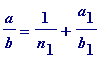 where 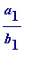 is a fraction whose numerator is less than a .
-
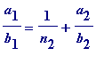
where
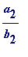
is a fraction whose numerator
![a[2]](images/Egyptian222.gif) is
less
than
is
less
than
-
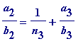
where
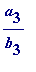
is a fraction whose numerator
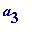
is
less
than
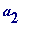
etc
The sequence 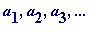 is strictly monotonic decreasing, which eventually terminates when one has 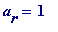 , for some r . For a given a , there will then be at most a terms in the sequence of unit fractions: 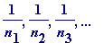 , and clearly the maximum can happen in the event that the sequence happens to be the natural numbers less than a : 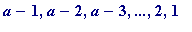 .
Thus, using the greedy algorithm :
- 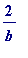 will require at most 2 unit fractions
- 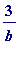 will require at most 3 unit fractions
-
 will require at most 4 unit fractions
will require at most 4 unit fractions
-
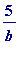
will require at most 5 unit fractions
etc
Conjecture (Erdös-Strauss). For every natural number
n
, greater than 3, there is an Egyptian fraction representation that is better than the one ensured by the greedy algorithm representation; in other words: for every integer
n
(greater than 3) there are natural numbers
x
,
y
and
z
such that
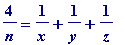
Interested readers may consult Chapter 30 of Mordell's Diophantine Equations .
Some elementary ideas (which could be at school level). Using
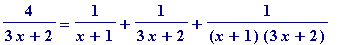
Thus, setting
n
= 3
x
+ 2 (
x
= 0, 1, 2, 3, 4, 5, ... ), we have that the Erdös-Strauss conjecture is (trivially) true for all such
n
.